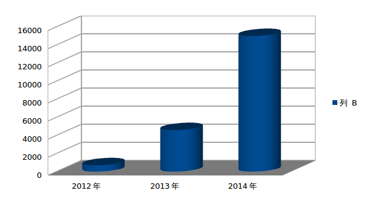

2014年技术发展规划
段洪义
2013年12月23日
2013年高新技术发展趋势呈现出互联性和移动性，随着智能手机的普及，大众都融入到移动互联网的浪潮之中。 移动互联网不是普通的互联网，他的本质是利用碎片时间让互联网以更为自然的方式融入生活的时时刻刻，方方面面。
作为一款与生活密切相关的位置服务软件，悠悠也有了长足的发展，值得高兴的是这期间我们很多员工开始理解开源、开始参与社区。 开始懂得在享受编程中快乐的工作，快乐的回家，这在沈阳这种工作条件并不太好的二线城市更加难能可贵的，这些都是我们悠悠发展的星星之火。
2013年技术车轮继续滚滚向前，从平民化的3D电影到工业革命2.0的3D打印机，3D技术已经普及到个体并正在进一步发展。 HTML5作为第五代超文本标记语言将成为互联网领域的新一代生力军。M2M、NFC、智能家电、大数据、云计算、4G技术、无人驾驶等技术开始引领业界潮流。
这一年，我们依然很忙；这一年，我们见证了进步；接下来我从技术方面总结2013展望2014。
uuboard平台上线
天下大事，分久必合，合久必分。作为一种服务资源整合的尝试，uuboard是一个综合性的LBS WEBSERVICE平台，其中包括:
- 符合OAUTH2规范的统一鉴权登录系统。
- 图片、语音等非结构化数据的云存储平台。
- 随心记、IM等功能的webservice接口。
- 收藏夹等半结构化数据的云存储平台。
uuboard是我们第一个应用自动化构建的服务，也是我们第一个使用业务监控系统的服务。
Simple slide with header and text
This is a slide with just text. This is a slide with just text. This is a slide with just text. This is a slide with just text. This is a slide with just text. This is a slide with just text.
There is more text just underneath with a code sample: 5px.
Simple slide with header and text (small font)
This is a slide with just text. This is a slide with just text. This is a slide with just text. This is a slide with just text. This is a slide with just text. This is a slide with just text.
There is more text just underneath with a code sample: 5px.
Slide with bullet points and a longer title, just because we can make it longer
- Use this template to create your presentation
- Use the provided color palette, box and arrow graphics, and chart styles
- Instructions are provided to assist you in using this presentation template effectively
- At all times strive to maintain Google's corporate look and feel
Slide with bullet points that builds
- This is an example of a list
- The list items fade in
- Last one!
Any element with child nodes can build.
It doesn't have to be a list.
Slide with bullet points (small font)
- Use this template to create your presentation
- Use the provided color palette, box and arrow graphics, and chart styles
- Instructions are provided to assist you in using this presentation template effectively
- At all times strive to maintain Google's corporate look and feel
Slide with a table
| Name | Occupation |
|---|---|
| Luke Mahé | V.P. of Keepin’ It Real |
| Marcin Wichary | The Michael Bay of Doodles |
Slide with a table (smaller text)
| Name | Occupation |
|---|---|
| Luke Mahé | V.P. of Keepin’ It Real |
| Marcin Wichary | The Michael Bay of Doodles |
Styles
- class="red"
- class="blue"
- class="green"
- class="yellow"
- class="black"
- class="white"
- bold and italic
Segue slide
Slide with an image

Slide with an image (centered)
Image filling the slide (with optional header)

This slide has some code
<script type='text/javascript'>
// Say hello world until the user starts questioning
// the meaningfulness of their existence.
function helloWorld(world) {
for (var i = 42; --i >= 0;) {
alert('Hello ' + String(world));
}
}
</script>
<style>
p { color: pink }
b { color: blue }
u { color: 'umber' }
</style>
This slide has some code (small font)
<script type='text/javascript'>
// Say hello world until the user starts questioning
// the meaningfulness of their existence.
function helloWorld(world) {
for (var i = 42; --i >= 0;) {
alert('Hello ' + String(world));
}
}
</script>
<style>
p { color: pink }
b { color: blue }
u { color: 'umber' }
</style>
The best way to predict the future is to invent it.
A distributed system is one in which the failure of a computer you didn’t even know existed can render your own computer unusable.